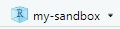
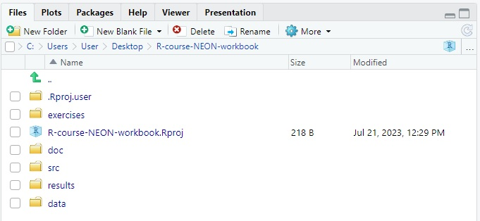

Brief description of the contents of this lesson.
In this lesson learners will:
How much time have you wasted wondering just where that file you downloaded went or which version of a paper you were working on? Have you ever forgotten exactly what you did to make that graph for a report and now need to make it again?
A modern scientist must not only learn how the natural world works- they also must be able to access and interact with the digital world through a computer. However for many scientists, a computer is a somewhat mysterious box of electronics that we learn how to interact with in a piecemeal fashion, gradually learning the tools we need to do our science. While most scientists don’t need to learn how the physical hardware of their computer works, learning a little bit about how the software that is programmed into our computers is structured can make it much easier to create reproducible science in a world where all data eventually becomes digital.
We’re going to get to know your computer by learning to navigate the file system through a command line. In doing so, we will set up a digital project that we will use for the rest of the chapters in this book. Keeping your computer’s files tidy and organized is the first step toward reproducible science and will save you time and energy.
A good project layout will ultimately make your life easier:
To understand how to set up a tidy project layout, we first need to understand how your computer is structured.
We’ll be using RStudio to create a self-contained, reproducible project that we will use for the rest of this book. For instructions on installing (or updating) R and RStudio, please see Computer Setup.
describe the different panels in RStudio: today just working files and terminal
file system
path
absolute path
directory
file
home directory
Try this: Find your Downloads folder
When you download a file from the internet where does it go? Most computers have a default directory where downloaded files are saved. It can be very useful to know where this directory is located on your filesystem.
- Use the file browser on your computer (Finder on Mac or File Explorer on Windows) to locate your default Downloads folder.
- Now use the file browser built into RStudio to find the same Downloads folder.
- Type out the absolute path to your downloads folder.
terminal = graphical user interface that provides a command line for interacting with the shell
shell = program that interacts with your file system
command line
relative path
working directory
graphical user interface (GUI)
/ root
./
$HOME
cd
ls
ls -l
ls –help
pwd
Try this: Navigate to your Downloads folder
Write a command that would navigate to your Downloads folder from your Home directory.
Knowing R’s current working directory is important because when you need to access other files (for example, to import a data file), R will look for them relative to the current working directory.
Each time you create a new RStudio Project, it will create a new
directory for that project. When you open an existing
.Rproj file, it will open that project and set R’s working
directory to the folder that file is in.
Challenge 5
You can check the current working directory with the
getwd()command, or by using the menus in RStudio.
- In the console, type
getwd()(“wd” is short for “working directory”) and hit Enter.- In the Files pane, double click on the
datafolder to open it (or navigate to any other folder you wish). To get the Files pane back to the current working directory, click “More” and then select “Go To Working Directory”.You can change the working directory with
setwd(), or by using RStudio menus.
- In the console, type
setwd("data")and hit Enter. Typegetwd()and hit Enter to see the new working directory.- In the menus at the top of the RStudio window, click the “Session” menu button, and then select “Set Working Directory” and then “Choose Directory”.
- In the windows navigator that opens, navigate back to the project directory, and click “Open”. Note that a
setwdcommand will automatically appear in the console. {: .challenge}
Tip: File does not exist errors
When you’re attempting to reference a file in your R code and you’re getting errors saying the file doesn’t exist, it’s a good idea to check your working directory. You need to either provide an absolute path to the file, or you need to make sure the file is saved in the working directory (or a subfolder of the working directory) and provide a relative path.
Try this: Creating a self-contained project
We’re going to create a new project in RStudio:
- Click the “File” menu button, then “New Project”.
- Click “New Directory”.
- Click “New Project”.
- Type in the name of the directory to store your project. This can be any name using letters or numbers, but it should not have any spaces. To set up the workbook for this course, use the name “R-course-NEON”
- Click the “Create Project” button.
If you completed the challenge correctly you should now be looking at a new RStudio session and in the upper right corner of the window you will see this the name of your project: 
You will also see a mostly empty folder in the Files panel. There should be one file with the name of the project: R-course-NEON.Rproj
This file contains information that RStudio needs to set up your project. One thing the .Rproj file will do is set your working directory to be the same directory that the .Rproj file is located in. Let’s see how this works.
Try this: Display the working directory in the Terminal and R Console
What command should you use in the terminal to display the path of the current working directory?
pwdTo display the working directory in the R Console, do the following:
- Click the Console tab next to the Terminal tab.
- This command line let’s you interact with R (which we will learn more about in future chapters). Notice that the command line begins with
>.- Type
getwd().- What do you see? How is it similar to and different from what the Terminal displays?
- How would the file path be different on someone else’s computer? How would it be similar?
RStudio projects are useful because they automatically open in the same working directory regardless of the computer they are located on. This means that when we start writing code, we can refer to the location of files relative to the main directory where the .Rproj file is saved and our code will work on any computer. Let’s see how this might work.
Try this: Opening an RStudio project through the file system
- Exit RStudio.
- Use your computer’s file browser to navigate to the directory where you created the R-course-neon project. This should be your Desktop folder if you followed the steps above.
- Move the entire R-course-neon folder to a folder on your computer where you are saving work for this class.
- Open the R-course-neon folder and double click on the
.Rprojfile in that directory.- Observe the Files panel in RStudio. What has changed?
- Use the Terminal and the R Console to display the current working directory. What has changed?
ADD TABLE HERE
Although there is no “best” way to lay out a project, there are some general principles to adhere to that will make project management easier:
Good Enough Practices for Scientific Computing gives the following recommendations for project organization:
doc directory.data directory, and
files generated during cleanup and analysis in a results
directory.src directory, and programs brought in from elsewhere or
compiled locally in the bin directory.Try this: Set up a project’s subfolders
Use the File panel in RStudio or your computer’s file browser to create the following folders inside the R-course-NEON folder:
- doc
- data
- results
- src
The Files panel in RStudio should now look like this: 
Now that we have a directory structure we can start to add files.
Let’s put a data file in the data/ directory.
Challenge 3
Download the gapminder data from here.
- Download the file (right mouse click on the link above -> “Save link as” / “Save file as”, or click on the link and after the page loads, press Ctrl+S or choose File -> “Save page as”)
- Make sure it’s saved under the name
gapminder_data.csv- Save the file in the
data/folder within your project.We will load and inspect these data later.
Challenge 4
It is useful to get some general idea about the dataset, directly from the command line, before loading it into R. Understanding the dataset better will come in handy when making decisions on how to load it in R. Use the command-line shell to answer the following questions: 1. What is the size of the file? 2. How many rows of data does it contain? 3. What kinds of values are stored in this file?
Solution to Challenge 4
By running these commands in the shell:
ls -lh data/gapminder_data.csv-rw-r--r-- 1 User User 80K Apr 17 10:03 data/gapminder_data.csvThe file size is 80K.
wc -l data/gapminder_data.csv1705 data/gapminder_data.csvThere are 1705 lines. The data looks like:
head data/gapminder_data.csvcountry,year,pop,continent,lifeExp,gdpPercap Afghanistan,1952,8425333,Asia,28.801,779.4453145 Afghanistan,1957,9240934,Asia,30.332,820.8530296 Afghanistan,1962,10267083,Asia,31.997,853.10071 Afghanistan,1967,11537966,Asia,34.02,836.1971382 Afghanistan,1972,13079460,Asia,36.088,739.9811058 Afghanistan,1977,14880372,Asia,38.438,786.11336 Afghanistan,1982,12881816,Asia,39.854,978.0114388 Afghanistan,1987,13867957,Asia,40.822,852.3959448 Afghanistan,1992,16317921,Asia,41.674,649.3413952
cp
mkdir
rm
rm -r for directories (after viewing help file)
make a new directory for manipulating the data cp a version into this directory remove it when done
head echo wc
It is important to use version control with projects. Go here for a good lesson which describes using Git with RStudio.
Find the R program on your computer
After completing these exercises, learners will be able to use a Unix terminal to:
Exercise 1.1 is required for other work in this book.
1.1 Set up the Student Workbook for this course on your computer.
1.2 Where is your Desktop directory located on your computer’s file system?
1.3 From the initial working directory of the Student Workbook RStudio project…
1.4 From the initial working directory of the Student Workbook RStudio project, use the Terminal to:
This lesson was adapted from Zimmerman et al. (2019) episode 2 by Jes Coyle.
(function() {
var codes = document.querySelectorAll('.solution');
var code, i, d, s, p, h;
for (i = 0; i < codes.length; i++) {
code = codes[i];
p = code.parentNode;
d = document.createElement('details');
s = document.createElement('summary');
h = document.createElement('em');
s.innerText = 'Solution:';
// <details><summary><em>Solution:</em></summary></details>
s.appendChild(h);
d.appendChild(s);
// move the code into <details>
p.replaceChild(d, code);
d.appendChild(code);
}
})();Introduction to Computing in R with NEON